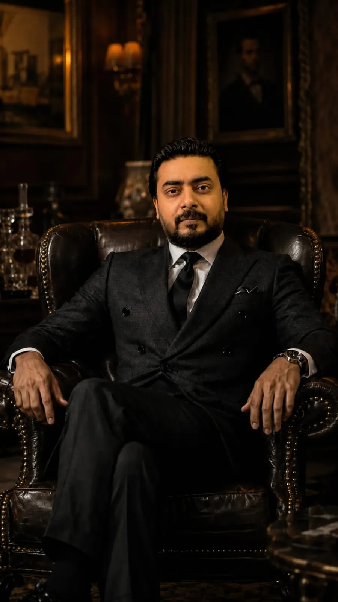
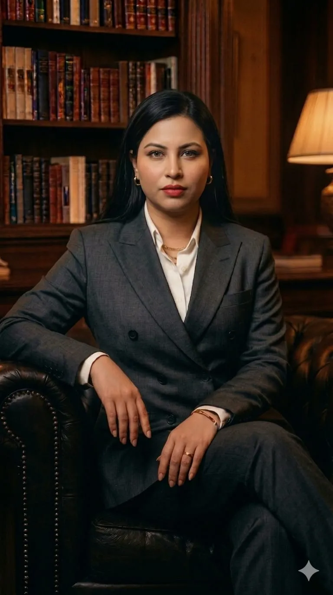
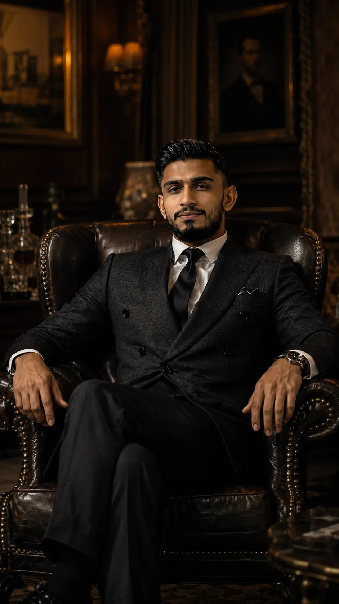
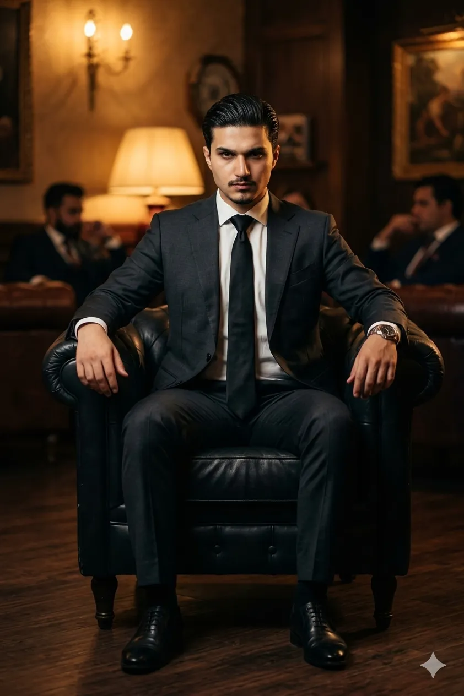

Meet the Souls Behind Spirita
A passionate team of leaders, researchers, and cultural advocates dedicated to bringing sacred wisdom to the world.
Meet Our Spiritual Guides
The dedicated minds and hearts behind Spirita's mission of cultural harmony and interfaith understanding.

Fawad Khan
The visionary behind Spirita, Fawad founded the platform with a single mission — to build a peaceful digital sanctuary where every religion is celebrated, honored, and understood. His leadership blends entrepreneurial spirit with deep respect for the world's spiritual traditions, shaping Spirita into a global voice for cultural harmony.

Aneeda Arif
As Chief Technology Officer, Aneeda architects the calm, premium experience that defines Spirita. From the elegant interface to the immersive galleries, every animation and pixel reflects her belief that technology should be peaceful, accessible, and respectful of the sacred content it presents.

Owais Aziz
Owais leads Spirita's research team, ensuring every festival, scripture, and spiritual tradition we present is accurate, authentic, and beautifully detailed. With a deep passion for comparative religion and years of academic study, he safeguards the integrity of every page on the platform.

Hamza Riaz
Hamza leads Spirita's Cultural Department, curating the festivals, traditions, and rich heritage that fill our galleries and pages. His travels across continents and conversations with spiritual communities bring a deeply human, lived experience to every cultural story we share.
Want to Join Our Mission?
We are always looking for passionate writers, scholars, and spiritual seekers to join the Spirita family.
Get in Touch